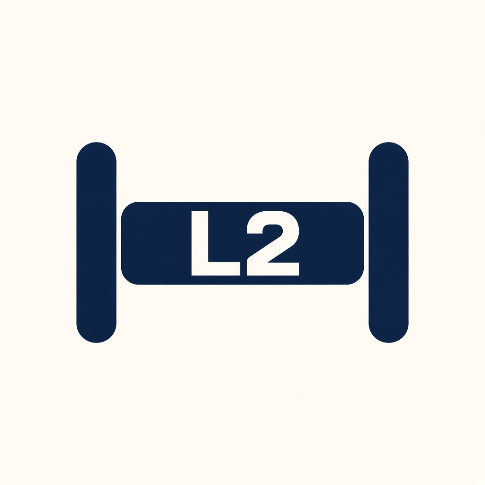
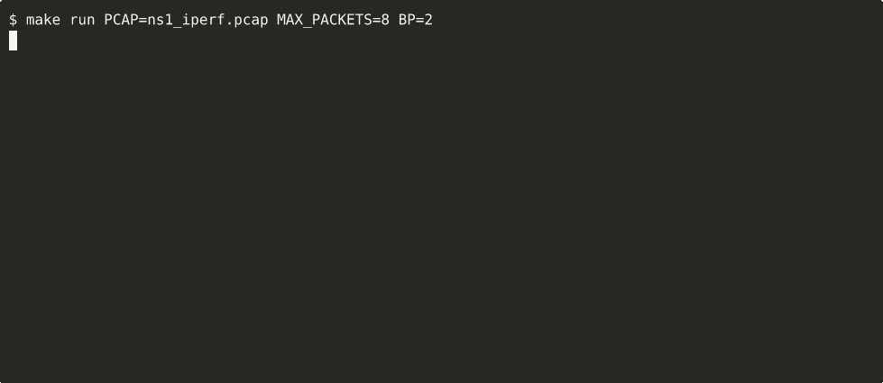

Learn
A unicast source MAC is installed on the ingress port. Multicast sources are left out of the table.

AXI-Stream · Verilator · pcap
Learn a source MAC, then flood, forward, or filter. A recorded pcap drives the bench. The SystemVerilog table and the C table have to print the same result.
A unicast source MAC is installed on the ingress port. Multicast sources are left out of the table.
An unknown destination, a broadcast, or an I/G multicast leaves on the other port.
A destination already known on the other port is forwarded. A destination known on this port is filtered.
pkt_l2br and dpi/l2_model.c share one 1024-entry table. Observers sit on the port wires. mis counts a decision, length, or fingerprint that disagrees. byte_mis counts an egress frame that disagrees with the ingress frame that was forwarded.
Both directions of ns1_iperf.pcap enter port A. The first frame floods. Both MACs are then known on A, so the rest of that window is filtered.

make run PCAP=ns1_iperf.pcap MAX_PACKETS=8 BP=2. The asciinema cast is the same log.[BR] rx_a=64 rx_b=0 tx_a=0 tx_b=1 flood=1 fwd=0 filter=63 drop=0 byte_mis=0 mis=0SPLIT=1 places source 02:00:00:00:00:01 on port A and every other source on port B. After the opening flood, unicast traffic is forwarded.
[BR] rx_a=38 rx_b=26 tx_a=26 tx_b=38 flood=1 fwd=63 filter=0 drop=0 byte_mis=0 mis=0make nics puts an example NIC on each port for that split. The recording below is the first 8 frames, slow enough to read. The bridge pane is the log. NIC A and NIC B are the same frames, written like a capture. Amber is a frame that NIC sent into the bridge. Blue is a frame that arrived from the bridge.

mis=0. The recording.These ten are in the regression. Each one lands in the SystemVerilog table and the C table, and mis=0 stays the gate. STP, LAG, and QinQ stay out.
AGE=N expires an entry after N clocks. The next unicast to that MAC floods.make ci checks the forward.BOTH=1 offers a beat on A and B together.LEN=1 is 64 to 1518. LEN=2 is 64 to 9000. The 12-to-2048 rule stays the default.make ci replays all 1000 frames of the iperf pcap.MCAST=1 installs one group on port B. An unknown group still floods.Linux, Verilator 5.020 or later, and libpcap.
sudo apt update
sudo apt install build-essential verilator libpcap-dev
make demoThe worked capture is iperf3 on two NICs, Ethernet link type 1. Pcap2HDL is the pcap-to-AXIS fixture. L2AxisBr is the device on two of those slave ports. A beat is accepted only when tvalid && tready.